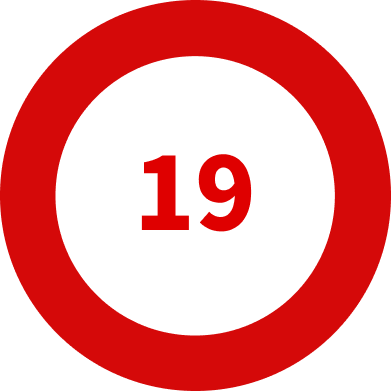

WHO는 제72차 총회에서 ‘게임 이용 장애’를 포함한
제11차 국제질병표준분류기준 개정안을 최종 의결했다.

이 결정은 전 세계적으로 큰 파장을 일으켰다.


문화 자체에 대한 부정적 인식을 확산시키고, 정상적인 열정과 병적인 집착을 구분하지 못하게 만들 수 있다. 객관적인 연구는 게임이 중독적이지 않다는 것을 증명한다.
낙인으로 인해 문화와 산업이 위협받는다.
겉보기엔 그럴듯한 논쟁.
그러나, ‘아이들을 위한다’는 명분 뒤, 불편한 진실이 있다.

질병화 결정으로 인해
수십억 게이머는 잠재적 환자가 된다.


질병화로 인해 거대한 디톡스 산업이 탄생한다. ‘아이’는 돈벌이 수단이 된다.


1년도 지나지 않은, 코로나 팬데믹 시기.
WHO는 게임을 권장하며 앞뒤가 맞지 않는 선택을 한다.

WHO는 게임이 스트레스를 해소해주고,
정신 건강 유지에 건강한 수단이라고 적극적으로 홍보했다.

세계 정신의학 진단 기준 중 하나인 APA는 게임 중독을 ‘추가적 연구가 필요한 상태’로 분류했다. 게임 중독이 독립적 정신 질환으로 확증할 만큼 과학적 증거가 부족하다고 공식적으로 판단했음을 의미한다.

문제적 게임 이용 청소년 중 88.5%는 ADHD, 우울증,조울증과 같은 질환을 함께 앓고 있었다.
게임의 과도한 이용은 질병의 원인이라기보다,
이미 존재하던 정신적 어려움의 증상일 가능성이 매우 높다는 의미이다.
한국 콘텐츠 진흥원의 연구 참가자 중 지속적 문제 성향을 보이는 비율은 매우 낮았다.
WHO의 기준상 게임으로 인해 12개월 이상 삶의 통제력 상실 등이 나타나야 하지만, 이 조건을 충족한 참가자는 없었다.
아동·청소년 및 성인의 게임 시간, 이용 게임 수는 시간이 흐를수록 감소했다. 이는 진학 등 생애주기 요인이 반영된 결과이다.
연령 증가에 따라 다양한 여가활동으로 전환되는 경향 또한 확인되었다.
학부모와 자녀가 인식하는 문제행동 수준도 점차 감소하는 경향을 보여, 성장에 따른 게임행동의 변화 가능성을 뒷받침하고 있다.

모든 시기에 걸쳐 과몰입군에 연속 포함된 아동, 청소년은 없었다. 오히려 게임 미이용자가 된 과몰입군도 있었다.

과몰입군 게임시간이 미포함군보다 적거나 같은 경우가 많았다. 게임 이용 시간과 과몰입 간 상관성이 없는 것이다.

형제,자매와 함께 게임을 하거나, 또래와 오프라인 사회관계가 많을수록 건전한 게임행동양식으로 분류되는 ‘선용군’ 포함 확률이 증가하여, 게임 과정에서 사회적 규범 학습의 영향도 확인되었다.
부모의 양육태도, 교우관계 등도 게임이용 행태와 유의미한 상관관계를 보였다.

2011년
청소년 수면권 보장을 명분으로, 만 16세 미만 청소년의 게임 접속을 자정부터 오전 6시까지 차단하는 규제.


시행 이후 청소년의 수면 시간 증가는 1분 30초 수준이다. 원인을 잘못 진단한 것이다. 다수의 연구는 원인이 게임이 아닌, 심야까지 이어지는 과도한 학습이라는 점을 지적했다.

규제 준수를 위한 기술적, 행정적 비용이 발생했고, ‘게임은 유해한 것’이라는 사회적 낙인을 강화해 산업의 성장이 저해됐다. 이후 한국 게임 분야 시장은 심각하게 위축되었다.
전세계적으로 유례를 찾기 힘든 강력한 규제는 기업에 장벽으로 작용했다.
한국의 청소년만을 선별해 특정 시간에 차단해야하는 과도한 기술적 비용으로 인해 한국 청소년 이용 자체가 불가능해진 사건은, 근거 없는 규제가 낳은 국제적 망신 사례이다.

질병이라는 낙인은 수십억 게이머를 잠재적 정신병자이자 사회적 죄인으로 만든다.
환자에게 진짜로 필요한 처방이 힘들어진다.
‘게임’이라는 편한 진단명에 진짜 문제가 가려진다.
심각한 우울증으로 게임에 몰두하는 환자가 ‘게임 이용 장애’로 진단 받는다면, 유일한 도피처를 빼앗길 뿐, 근본 원인인 우울증은 전혀 치료되지 않은 채 방치될 것이다.

자신만의 이익을 위해 게임과 취약계층을 도구로 삼는 행동은 사회가 나아갈 수 있는 기회를 막는다.